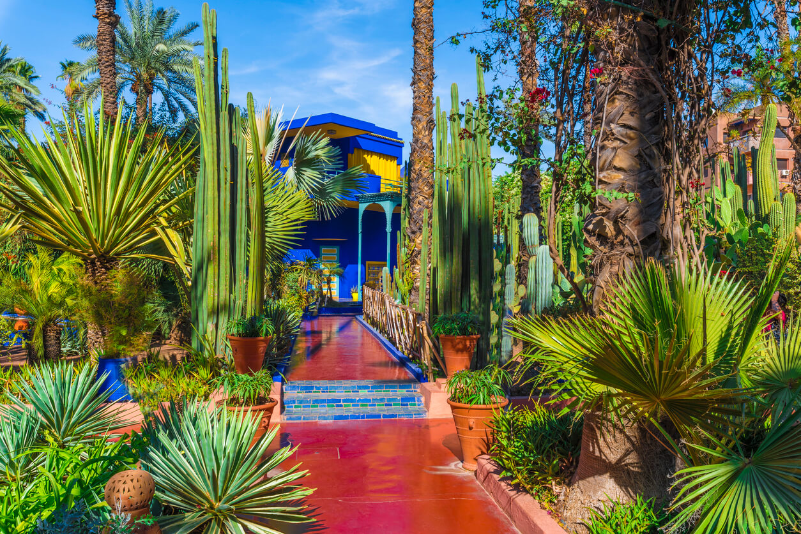

MARRAKECH
Marrakech est une ville pas comme les autres, avec sa culture vibrante et sa beauté captivante. De l'emblématique place Jemaa el-Fnaa aux anciens murs de la Médina, Marrakech est un lieu chargé d'histoire, de culture et d'aventure. Des ruelles sinueuses remplies d'épices, de salons de thé et de magasins d'artisanat aux marchés animés débordant de tissus colorés et de produits artisanaux, Marrakech est une ville qui vous laissera bouche bée. Que vous exploriez certains des monuments anciens de la ville ou que vous dégustiez une cuisine marocaine traditionnelle dans l'un de ses nombreux restaurants, Marrakech vous laissera une impression inoubliable.
Les Jardins Majorelle
Un mélange de plantes et de couleurs qui donne aux visiteurs une sensation de fraicheur. Un cadre poétique conçu par le peintre Jaques Majorelle qui vécut à Marrakech à partir de 1924. Les Jardins Majorelle furent ensuite rachetés et restaurés par Yves Saint Laurent en 1980. Le chant du bulbul des jardins accueille les visiteurs, qui découvrent à côté d'espèces communes comme le merle noir, le moineau domestique, le rouge-gorge, et la mésange charbonnière, des espèces moins fréquentes, des fauvettes, la bergeronnette grise, le bruant striolé, le rougequeue noir, et le gobemouche gris. Les tourterelles et les pigeons sont très nombreux. Un faucon crécerelle nicherait dans la tour8. Les cinq espèces d'oiseaux les plus visibles depuis les toits en terrasse de Marrakech sont la cigogne blanche, la bergeronnette grise, la tourterelle des bois, le faucon crécerelle, et le gobemouche gris.
Jeema El Fna

La place Jemaa el-Fna, située au sud-ouest de la médina de Marrakech au Maroc, est un haut-lieu traditionnel, populaire et animé. Elle attire plus d'un million de visiteurs chaque année et incarne la diversité de l'identité marocaine grâce à la présence de représentants des différentes cultures qui constituent le pays, notamment les Arabes, les Berbères et les Gnaouas. Cette place est inscrite au patrimoine culturel immatériel depuis 2008 et au patrimoine mondial depuis 1985 par l'UNESCO. La Jemaa el-Fna est une véritable Cour des Miracles, où se mêlent les souks de Marrakech, la mosquée Koutoubia et le palais royal. Elle est animée d'une vie populaire intense, de la fin de l'après-midi jusqu'à l'appel à la prière à l'aube. Plus de 10 000 couverts y sont servis chaque jour, et elle reste l'une des principales attractions traditionnelles et historiques du tourisme au Maroc. Le nom « Jemaa El Fna » signifie littéralement en français « assemblée des trépassés ». Cette place est un véritable symbole de la ville de Marrakech, où le médiéval et le contemporain coexistent harmonieusement pour offrir un spectacle sensoriel captivant et intéressant au quotidien.